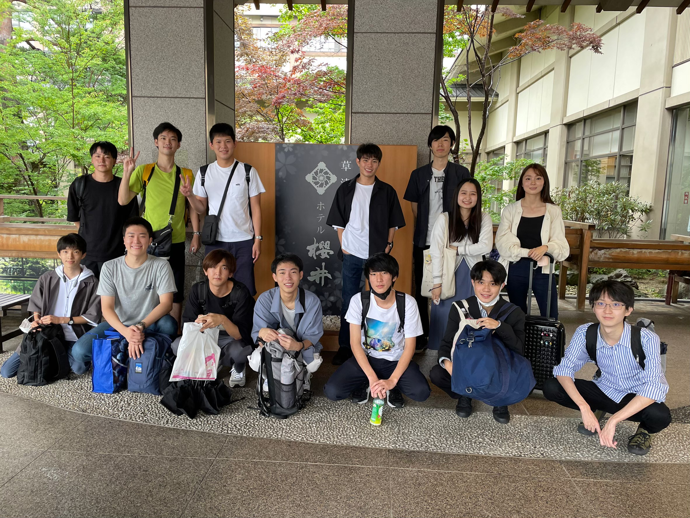
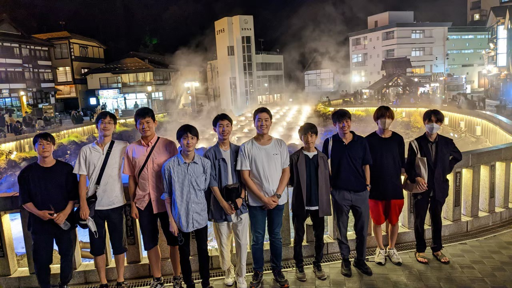
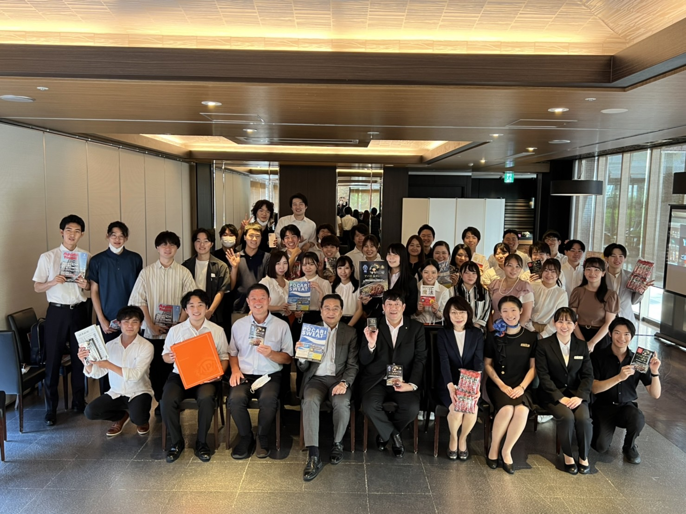
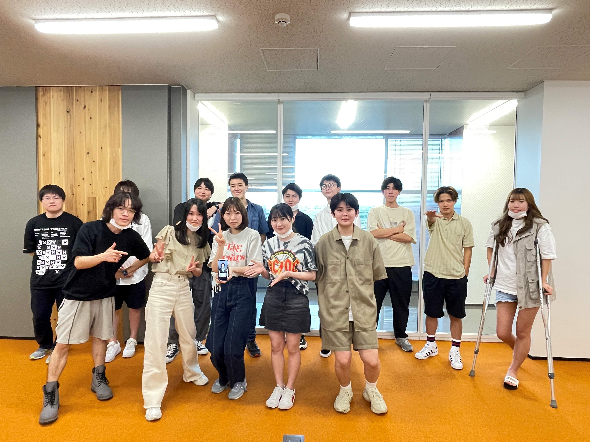
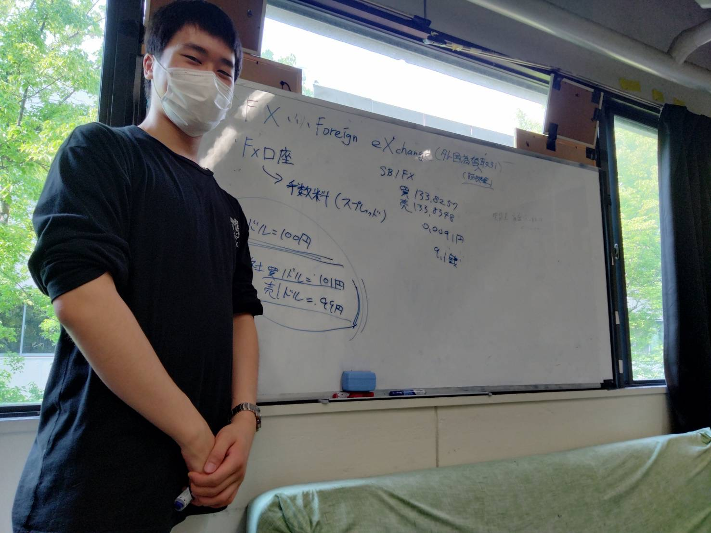

Table of Contents:
- 2022/08: Summer-focused study session by Securities Research Society
- 2022/08: Networking session with a Sirector of APA Hotels & Resorts
- 2022/06: Studied Associate Professor Yang's Seminars for a Semester
- 2022/06: Strategic Forign Currency Exchange Investment Seminar
-
2022 Aug.
Focused study session at Kusatsu Onsen
Securities Research Society
Gunma, Japan

Participated in an intensive, week-long summer-focused study session by the Securities Research Society. The program enhanced our comprehension of the hospitality industry through a direct, hands-on experience with its business models.
Further deepned my expertise in Japanese equities through a series of extensive discussion sessions. Though exchanges with experiensed individual invesors within the student club, I expanded detailed methods in strategic management of personal investment portfolios. -
2022 Aug.
Networking session with an Alumni
(Senior Managing Director at APA Hotels and Resorts)APA Hotels & Resorts Tokyo Bay Makuhari
Chiba, Japan
Networked with Taku Motoya, an alumnus of Chuo University and a Senior Managing Director at APA Hotels & Resorts (Ticker: APA, a Fortune 500 company).
APA Hotels & Resorts is one of the largest hotel chains in Japan, operating over 400 hotels, including locations in South East Asia and North America.
Gained a deeper understanding of the hotel industry, including real estate acquisition and strategic branding in hospitality. -
2022 Jul.
Associate Professor Yang's Seminars
Chuo University
Tokyo, Japan
Studied for one semester under Associate Professor Yang at Chuo University (click here for details), who specializes in international business.
Deepened my understanding of the restrictions and benefts of international trades, particularly within the Asian region. Conducted academic research and presentations, which enhanced my research and collaboration skills. -
2022 Jul.
Hosted a study session at Securities Research Society (A student organization at Chuo University)
Securities Research Society
Tokyo, Japan
Hosted an informative educational session focusing on foreign currency exchange. Explained the mechanics of forex trading and provided strategic tips for achieving shrot-term capital gains. Covered methods for determining entry and exit points using various indicators such as the Relative Strength Index (RSI) and Moving Averages (MA).